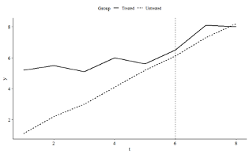
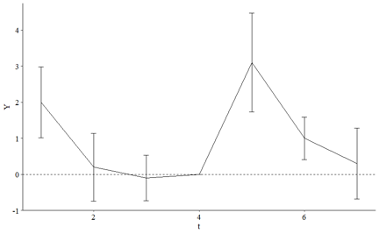

This week’s homework is taken directly from NHK (Chapter 18) for the most part.
11.1 Exercise
In the Event Studies chapter we estimated the effect of something that occurs at a specific time by just comparing before-event to after-event, without really using a control group. What assumption is made by no-control-group event studies that we don’t have to make with difference-in-differences?
11.2 Exercise
Which of the following potential back doors is controlled for by comparing the treated group to a control group?
The treated group may be following a trend, unique to the group, that would make the outcome change from before-treatment to after-treatment anyway
There may be events affecting everyone that would change the outcome from before-treatment to after-treatment anyway
There may be differences in typical outcome levels between the treated group and the untreated group
The decision to treat the treated group, rather than some other group, may be based on factors that are related to the outcome
11.3 Exercise
Consider a treatment and control group. Looking only at the pre-treatment period, they have exactly the same outcomes (zero gap between them in each period).
Despite having exactly the same outcomes pre-treatment, it happens to be the case that parallel trends is violated for these two groups. How is this possible? Explain what it means for parallel trends to be violated in this case, or give an example of how it could be violated.
If we estimate the causal effect in this case using difference-in-differences, even though parallel trends is violated, how much would our effect be off by? (note you won’t be able to give a specific number)
11.4 Exercise
Consider the below graph showing the average outcome for treated and control groups in the lead up to treatment (indicated by the dashed line), and also after treatment

Based on the prior trend, does it seem likely that parallel trends holds in this instance?
If we estimate difference-in-differences anyway, are we likely to overestimate the actual causal effect, underestimate it, or get it right on average?
11.5 Exercise
In mid-2020, during the COVID-19 pandemic, different countries pursued different courses of action. Some locked down fully, imposing harsh penalties to most people for leaving the house outside certain proscribed times. Some were looser and only suggested staying at home, and some had hardly any restrictions at all. You notice that COVID rates tend to spike dramatically in different countries at seemingly-random times, and want to know if certain restrictions helped.
From March through May 2020, US and Canada COVID case rates followed similar trends (US rates were higher, but the trends were similar). You want to look at the effect of COVID restrictions enacted in Canada in late May 2020 on case rates. Is DID, with the US as a control group, a good way to estimate this effect? If not, what concerns would you have about this research design?
11.6 Exercise
Consider the below table of mean outcomes, and calculate the difference-in-difference effect of treatment. Write out the equation you used to calculate it (i.e. show how the four numbers in the table are combined to get the estimate)
Before
After
Treated
5
9
Untreated
6
7.5
11.7 Exercise
You are planning to estimate whether voter-protection laws increase voter turnout. You note that, in 2015, a lot of new voter-protection laws were enacted in some provinces but not in others. Conveniently, no new laws were enacted in 2012, 2014, or 2016, so you decide to use 2012 and 2014 as your “before” periods and 2016 as “after”.
Which of the following best describes what you’d want to regress state-and-year level “voter turnout” measures on?
An indicator for whether the state is treated, and an indicator for whether the year is 2016.
A set of fixed effects for state, and a set of fixed effects for year.
An indicator for whether the state is treated, a set of fixed effects for year, and an indicator for whether the state is currently treated.
A set of fixed effects for state, and for year, and an interaction between “is 2016” and “is a treated state”.
This design should not be estimated using a regression.
Unless you chose the final option in the previous question, specify which coefficient in that regression would give you the DID estimate.
11.8 Exercise
Not from NHK.
In your own words, describe what is the “two-way fixed effects difference-in-difference estimator.” What does this model assume about the effect of some treatment over time?
Consider the below graph with estimates from a dynamic difference-in-differences model for a treatment that occurs between periods 4 and 5, with 95% confidence intervals shown.

What about this graph might make us concerned about our identification assumptions?
Ignoring any concerns we have, what would we say is the effect of treatment on Y in this case? (note the height of the line in period 5 is about 3, in period 6 is about 1, and in period 7 is about .5).
11.10 Exercise
This exercise is also taken directly from NHK.
One. In this assignment we will be walking through a very simple application of difference-in-differences that comes from Peter Nencka. In particular, it seemed that the beginning of the COVID-19 pandemic led to a brief craze for homemade sourdough bread, as people had to stay home, and stores were out of yeast (sourdough can be made at home using yeast from the air and does not require store-bought yeast). We will be estimating whether COVID lockdowns actually increased interest in sourdough bread,
We will be measuring interest in sourdough bread using Google Trends data in the USA. Google Trends tracks the popularity of different search terms over time. We will be comparing the popularity of the search term “sourdough” against the control groups: the search terms “cereal,” “soup,” and “sandwich,” the popularity of which we suspect might not have been meaningfully affected by COVID lockdowns.
Two. Make a line graph with date on the x-axis and hits on the y-axis, with a separate line for each keyword. Also add a vertical line for the “start of the pandemic” which we’ll decide for our purposes is March 15, 2020.
Hint. You’ll need to add geom_vline(xintercept = as.Date("2020-03-15")).
Three. Looking at your graph, comment on (a) whether it looks like the lockdown had an effect on the popularity of sourdough, (b) the shape that effect takes (i.e. is it a permanent increase in popularity? Temporary?), (c) whether you might be concerned about any of the control groups we’ve chosen
Four. Create a “Treated” indicator that’s equal to 1 for sourdough and 0 otherwise (or True/False, either way). Do a test of whether the prior trends (keeping March 15 as the “treatment date”) differ between the treated and control groups, using a linear trend and doing a statistical significance test at the 95% level. Then, if you were concerned about any of the control groups in question 3c, drop any you were concerned about (and keep them dropped for the rest of the assignment) and rerun the test.
Note. NHK refers to this kind of test as a “placebo test.” We are just trying to increase our confidence in the parallel trends assumption.
Write a line commenting on whether you can reject equal prior trends in your model(s).
Five. Create a month variable by shifting the date variable back 15 days (so that the treatment day is the first day of the month) and then taking the month of the resulting date. Also create an After variable equal to 1/0 (or True/False) if the date is March 15 or afterwards.
Then, take a look at the values of month you get and how they line up with date, and subtract a number from month so that the last period just before treatment (Feb 16-Mar 14) is 0. (Also, change the Jan 1-14 month so it’s one less than the Jan 15-Feb 14 month)
(You can then use -lubridate::days() to subtract days from the date, and lubridate::month() to get the month from the date.)
Then, use two-way fixed effects to estimate the difference-in-difference estimate of the effect of lockdown on sourdough popularity with keyword and month fixed effects, and standard errors clustered at the keyword level.
Last class we had a little confusion with the p-values reported by the fixest::feols(). We will figure this out next week, so don’t worry too much about them.
Hint: This data-wrangling bit is trickier than it seems. Don’t feel discouraged!
The chapter introduces dynamic treatment effects, which where briefly discussed by Steve. One of the reasons fixest is becoming a popular package is because it makes estimating these models very easy, although it introduces a special syntax.
This is how we would estimate a difference-in-difference model allowing the effect to differ by month (using month = 0 as a reference period), with standard errors clustered at the keyword level.
---title: "Week 11"callout-appearance: simplecallout-icon: false---This week's homework is taken directly from [NHK](https://github.com/NickCH-K/TheEffectAssignments) (Chapter 18) for the most part.## Exercise> In the Event Studies chapter we estimated the effect of something that occurs at a specific time by just comparing before-event to after-event, without really using a control group. What assumption is made by no-control-group event studies that we don’t have to make with difference-in-differences?## Exercise> Which of the following potential back doors is controlled for by comparing the treated group to a control group?>> a. The treated group may be following a trend, unique to the group, that would make the outcome change from before-treatment to after-treatment anyway>> b. There may be events affecting everyone that would change the outcome from before-treatment to after-treatment anyway>> c. There may be differences in typical outcome levels between the treated group and the untreated group>> d. The decision to treat the treated group, rather than some other group, may be based on factors that are related to the outcome## Exercise> Consider a treatment and control group. Looking only at the pre-treatment period, they have exactly the same outcomes (zero gap between them in each period).>> a. Despite having exactly the same outcomes pre-treatment, it happens to be the case that parallel trends is violated for these two groups. How is this possible? Explain what it means for parallel trends to be violated in this case, or give an example of how it could be violated.>> b. If we estimate the causal effect in this case using difference-in-differences, even though parallel trends is violated, how much would our effect be off by? (note you won’t be able to give a specific number)## Exercise> Consider the below graph showing the average outcome for treated and control groups in the lead up to treatment (indicated by the dashed line), and also after treatment{fig-align="center" width="60%"}> a. Based on the prior trend, does it seem likely that parallel trends holds in this instance?>> b. If we estimate difference-in-differences anyway, are we likely to overestimate the actual causal effect, underestimate it, or get it right on average?## Exercise> In mid-2020, during the COVID-19 pandemic, different countries pursued different courses of action. Some locked down fully, imposing harsh penalties to most people for leaving the house outside certain proscribed times. Some were looser and only suggested staying at home, and some had hardly any restrictions at all. You notice that COVID rates tend to spike dramatically in different countries at seemingly-random times, and want to know if certain restrictions helped.>> From March through May 2020, US and Canada COVID case rates followed similar trends (US rates were higher, but the trends were similar). You want to look at the effect of COVID restrictions enacted in Canada in late May 2020 on case rates. Is DID, with the US as a control group, a good way to estimate this effect? If not, what concerns would you have about this research design?## Exercise> Consider the below table of mean outcomes, and calculate the difference-in-difference effect of treatment. Write out the equation you used to calculate it (i.e. show how the four numbers in the table are combined to get the estimate)| | | ||---------------|------------|-----------|| | **Before** | **After** || **Treated** | 5 | 9 || **Untreated** | 6 | 7.5 |## Exercise> You are planning to estimate whether voter-protection laws increase voter turnout. You note that, in 2015, a lot of new voter-protection laws were enacted in some provinces but not in others. Conveniently, no new laws were enacted in 2012, 2014, or 2016, so you decide to use 2012 and 2014 as your "before" periods and 2016 as "after".>> a. Which of the following best describes what you'd want to regress state-and-year level "voter turnout" measures on?>> i. An indicator for whether the state is treated, and an indicator for whether the year is 2016.>> ii. A set of fixed effects for state, and a set of fixed effects for year.>> iii. An indicator for whether the state is treated, a set of fixed effects for year, and an indicator for whether the state is currently treated.>> iv. A set of fixed effects for state, and for year, and an interaction between "is 2016" and "is a treated state".>> v. This design should not be estimated using a regression.>> b. Unless you chose the final option in the previous question, specify which coefficient in that regression would give you the DID estimate.## Exercise*Not from NHK.*In your own words, describe what is the "two-way fixed effects difference-in-difference estimator." What does this model assume about the effect of some treatment over time?You might need to re-read this section:<https://theeffectbook.net/ch-DifferenceinDifference.html#long-term-effects>## Exercise> Consider the below graph with estimates from a dynamic difference-in-differences model for a treatment that occurs between periods 4 and 5, with 95% confidence intervals shown.{fig-align="center" width="80%"}> a. What about this graph might make us concerned about our identification assumptions?>> b. Ignoring any concerns we have, what would we say is the effect of treatment on Y in this case? (note the height of the line in period 5 is about 3, in period 6 is about 1, and in period 7 is about .5).## ExerciseThis exercise is also taken directly from NHK.> **One.** In this assignment we will be walking through a very simple application of difference-in-differences that comes from Peter Nencka. In particular, it seemed that the beginning of the COVID-19 pandemic led to a brief craze for homemade sourdough bread, as people had to stay home, and stores were out of yeast (sourdough can be made at home using yeast from the air and does not require store-bought yeast). We will be estimating whether COVID lockdowns actually increased interest in sourdough bread,>> We will be measuring interest in sourdough bread using Google Trends data in the USA. Google Trends tracks the popularity of different search terms over time. We will be comparing the popularity of the search term "sourdough" against the control groups: the search terms "cereal," "soup," and "sandwich," the popularity of which we suspect might not have been meaningfully affected by COVID lockdowns.This is the data:```{r}#| message: falselibrary(tidyverse)url <-"https://raw.githubusercontent.com/NickCH-K/TheEffectAssignments/main/sourdough_trends.csv"sr <-read_csv(url) |>select(date, keyword, hits) |>mutate(date =as.Date(date),keyword =factor(keyword) )glimpse(sr)```> **Two**. Make a line graph with `date` on the x-axis and `hits` on the y-axis, with a separate line for each `keyword`. Also add a vertical line for the "start of the pandemic" which we'll decide for our purposes is March 15, 2020.Hint. You'll need to add `geom_vline(xintercept = as.Date("2020-03-15"))`.> **Three**. Looking at your graph, comment on (a) whether it looks like the lockdown had an effect on the popularity of sourdough, (b) the shape that effect takes (i.e. is it a permanent increase in popularity? Temporary?), (c) whether you might be concerned about any of the control groups we've chosen>> **Four**. Create a "Treated" indicator that's equal to 1 for sourdough and 0 otherwise (or True/False, either way). Do a test of whether the prior trends (keeping March 15 as the "treatment date") differ between the treated and control groups, using a linear trend and doing a statistical significance test at the 95% level. Then, if you were concerned about any of the control groups in question 3c, drop any you were concerned about (and keep them dropped for the rest of the assignment) and rerun the test.*Note. NHK refers to this kind of test as a "placebo test." We are just trying to increase our confidence in the parallel trends assumption.*> Write a line commenting on whether you can reject equal prior trends in your model(s).>> **Five**. Create a `month` variable by shifting the `date` variable back 15 days (so that the treatment day is the first day of the month) and then taking the month of the resulting date. Also create an `After` variable equal to 1/0 (or True/False) if the date is March 15 or afterwards.>> Then, take a look at the values of `month` you get and how they line up with `date`, and subtract a number from `month` so that the last period just before treatment (Feb 16-Mar 14) is 0. (Also, change the Jan 1-14 month so it's one less than the Jan 15-Feb 14 month)>> (You can then use `-lubridate::days()` to subtract days from the date, and `lubridate::month()` to get the month from the date.)>> Then, use two-way fixed effects to estimate the difference-in-difference estimate of the effect of lockdown on sourdough popularity with `keyword` and `month` fixed effects, and standard errors clustered at the `keyword` level.::: callout-warningLast class we had a little confusion with the p-values reported by the `fixest::feols()`. We will figure this out next week, so don't worry too much about them.:::::: callout-tipHint: This data-wrangling bit is trickier than it seems. Don't feel discouraged!:::::: callout-tipThe chapter introduces *dynamic treatment effects,* which where briefly discussed by Steve. One of the reasons `fixest` is becoming a popular package is because it makes estimating these models very easy, although it introduces a special syntax.This is how we would estimate a difference-in-difference model allowing the effect to differ by month (using `month = 0` as a reference period), with standard errors clustered at the keyword level.```{r}#| eval: falsedynamic <-feols( hits ~i(month, Treated, ref =0) | keyword + month,cluster ="keyword",data = sr)coefplot(dynamic)```:::